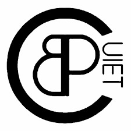
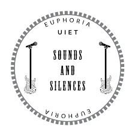
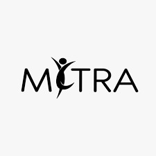
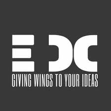
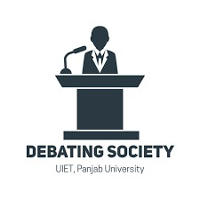
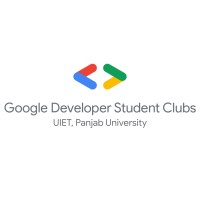
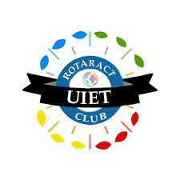
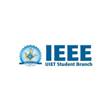
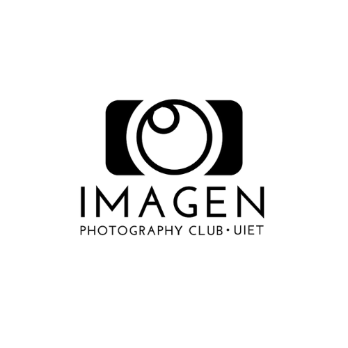
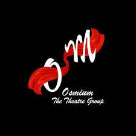

Introduction
Clubs - College life isn't just about textbooks and exams. It's about exploring your passions, developing new skills, and making lifelong connections. UIET offers a vibrant network of clubs and committees that cater to diverse interests, from academic pursuits and creative expression to social service and professional development. Whether you're a budding entrepreneur, a tech enthusiast, a music aficionado, or simply someone looking to give back to the community, there's a club or committee waiting to welcome you. Get ready to step outside your comfort zone, build your resume, and create lasting memories – all while contributing to a dynamic and enriching college experience.